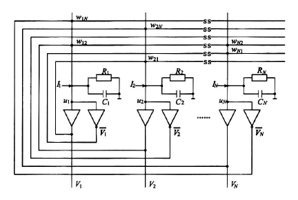
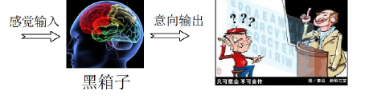

PPT 第 2 页
CHAPTER 4 · 智能控制的“神经网络基石”
第四章 人工神经元模型
从生物启发到数据驱动
PPT 第 3 页
本章内容
前言——为什么需要神经元
前馈神经网络——BP 与 RBF
动态神经网络——Hopfield 与模糊神经网络
PPT 第 4–20 页
一、前言：为什么需要神经元？
本节按五个环节展开：为什么需要神经元 → 智能控制的技术谱系 → 神经网络研究四大维度 → 80 年沉浮录 → 神经元与控制系统接口 。核心问题：为什么神经网络能解决经典控制解决不了的问题？
1. 动机与挑战——经典控制遇到了什么麻烦？（P5）
痛点 · 难以精确建模
现代工程系统（飞行器姿态、化工反应釜、城市交通流）呈现高度复杂的动态特性：强非线性、强耦合、多变量时变 。
传统控制（PID、状态反馈）高度依赖物理机理建模；当模型失配时，控制性能急剧下降。
出路 · 数据驱动逼近
人工神经网络无需预先知道系统内部结构 ，仅凭输入–输出数据即可逼近任意非线性函数。
万能逼近定理（Universal Approximation Theorem）
含足够神经元的单隐层前馈网络，可以任意精度逼近任意连续非线性函数（Cybenko, 1989）。
2. 技术定位——智能控制的“三大支柱”（P6）
人类智能的三种模拟途径：语言推理 · 脑结构学习 · 自然进化 。
支柱一 · 模糊逻辑
模仿人类的语言描述与推理——用“若…则…”规则表达专家经验与模糊常识。
IF … THEN … RULES
支柱二 · 人工神经网络（本章核心）
模仿人脑细胞的分布式并行结构与自学习能力——从数据中自动提取规律。
PARALLEL · SELF-LEARNING
支柱三 · 进化计算 / 强化学习
模仿自然界的试错与优胜劣汰，在与环境交互中演化出最优策略。
结论 现代热点：深度强化学习 = 支柱二 × 支柱三。神经网络是贯通 感知 → 建模 → 决策 → 控制 全链条的核心使能器。
3. 人工神经网络研究什么？——四大核心维度（P7）
神经网络是一个庞大的工具家族。理解它的分类，比死记硬背公式更重要——从模型、结构、架构、算法 四个层面拆解。
维度 名称 内容 维度一 神经元模型 经典：线性 / 非线性处理单元——MP 模型、感知机单元；现代引申：深度残差单元（ResNet Block）、门控单元（LSTM Gate） 维度二 网络结构 按连接方式分类——前向网络（Feedforward）、反馈网络（Hopfield）、自组织网络（SOM / ART），经典控制中最关心的拓扑结构 维度三 现代深度架构 深层堆叠与专用架构（CNN、ResNet、Transformer 等） 维度四 学习范式 有监督 / 无监督 / 强化学习及其训练算法
4. 历史回眸——80 年沉浮录（P8–9）
上篇 · 1943–1986 前深度学习时代：三起两落
1943 奠基 · M-P 形式神经元模型 McCulloch & Pitts：神经科学数学化的开端。
1949 突触可塑性 · Hebb 学习规则 “一起放电的神经元，连在一起”。
1957 首台实现 · 感知机 Perceptron Rosenblatt：第一台可学习的神经机器。
1969 第一次寒冬 · XOR 困境 单层感知机无法解决线性不可分问题。
1982 物理学介入 · Hopfield 能量函数 给出反馈网络稳定性的判据。
1986 拯救者出现 · BP 反向传播算法 Rumelhart、Hinton 等：多层感知机训练突破，研究再度复兴。
1990s 第二次寒冬 训练不稳定、局部极小值问题无解，研究再度低迷。
下篇 · 1998–2024 深度学习与大模型时代
1998 首次商用 · LeNet-5 卷积神经网络 LeCun：CNN 用于支票字符识别，首次大规模商用。
2006 深度学习命名 · 深度信念网络 DBN Hinton：逐层预训练破解深层网络训练难题。
2012 算力引爆智能 · AlexNet 夺冠 ImageNet 以碾压性优势夺得图像识别冠军，开启深度学习浪潮。
2017 架构革命 · Transformer 提出 自注意力机制取代 RNN，成为大语言模型（LLM）的基石。
2024 诺贝尔物理学奖 John J. Hopfield · Geoffrey E. Hinton：表彰其在机器学习领域的基础性贡献——这标志着神经网络获得科学界最高认可。
5. 神经网络与自动化控制学科之间（P10）
50–60 年代 自适应控制 1959 年，Bernard Widrow 提出 Adaline（自适应线性神经元）。
1969 第一次寒冬 · XOR 困境 这意味着它连最简单的非线性被控对象都搞不定。
80–90 年代 系统辨识 正向建模、逆向控制、神经优化控制。
90 年代中期 “黑箱”与“安全性” 神经网络训练不稳定、局部极小值问题无解；控制的核心诉求永远是稳定性、实时性和可靠性，神经网络缺少“稳定性证明”。
2006 年至今 控制的“端到端” 攻坚传统控制无法触及的高维复杂环境。
6. 引言小结——三个核心认知（P11）
角色变迁 ：神经网络不再仅是“非线性函数逼近器”，而是集感知、认知、决策于一体的智能控制核心引擎。工程启示 ：为控制领域“不可建模”提供直接的数据驱动路径——系统辨识与神经自适应控制。学习预告 ：下一环节从“生物神经元”抽象为“数学公式”，推导前向传播与 BP 算法。
寄语 每一个数学符号背后，都是几代科学家试图模拟大脑的宏大尝试。
7. 生物神经元的数学抽象——M-P 模型（P12）
人工神经元是对生物神经元的功能模拟 ：多输入、单输出的非线性信息处理单元 。
x 1
x 2
⋮
x n
w 1
w 2
w n
Σ
Net
f(·)
y
偏置 b（= −θ）
M-P 神经元模型：输入加权求和并加偏置，经非线性激活产生输出｜按 PPT 第 12 页绘制
统一数学表达（2026 版标准符号）
输入向量 $\boldsymbol{x}=[x_1,x_2,\dots,x_n]^{\mathrm{T}}$，权值向量 $\boldsymbol{w}=[w_1,w_2,\dots,w_n]^{\mathrm{T}}$；
净输入与输出：
$$Net=\sum_{i=0}^{n} w_i x_i + b,\qquad y=f(Net)$$
符号约定：偏置 $b$ 与阈值 $\theta$ 的关系为 $b=-\theta$ ，统一用 $+b$ 避免混乱。
这是全章的骨架公式 ——后续所有网络都由它堆叠而成。
8. 激活函数——非线性的来源（P13）
引入非线性，是神经网络能够逼近任意函数的关键。
① 阈值型（Step）
1
0
② 分段线性型
1
α
③ Sigmoid（Logistic）
1
0
④ Tanh（双曲正切）
1
−1
四种常用激活函数｜按 PPT 第 13 页绘制
类型 表达式 特点 / 用途 ① 阈值型 $net\geq 0$ 输出 $1$，否则输出 $0$ 用于感知机 ② 分段线性型 $net_0\sim net_1$ 线性过渡（斜率 $\alpha$），两端饱和 $0/1$ 饱和区与非饱和区并存 ③ Sigmoid $f(net)=\dfrac{1}{1+e^{-net}}$ 输出 $0\sim1$，可作概率输出 ④ Tanh $f(net)=\dfrac{e^{net}-e^{-net}}{e^{net}+e^{-net}}$ 输出 $-1\sim1$，零中心
饱和区 vs 非饱和区 饱和区（曲线两端） ：梯度趋近 0，权值几乎不更新——“学不动”；非饱和区（中段） ：梯度显著，学习效率高——“学得快”。$|net|$ 较大时 Sigmoid / Tanh 进入饱和区，即梯度消失 。
9. 神经网络的连接结构（Topology）（P14）
按信息流向分为三大类（原“相互结合型”并入反馈）：
① 前向网络 FEEDFORWARD
信息单向传播、无反馈环，适合静态映射 。
典型：MLP、CNN
② 反馈网络 FEEDBACK · RECURRENT
含反馈环，具有记忆与动力学特性，适合时序与联想记忆（动态记忆） 。
典型：Hopfield、RNN、LSTM
③ 自组织网络 SELF-ORGANIZING
通过竞争学习，自动发现输入数据的聚类特征 。
典型：SOM、ART
选用口诀 看到任务先想拓扑——静态映射选前向，时序记忆选反馈，聚类特征选自组织 。
10. 神经网络如何“学习”？——三种数据驱动范式（P15）
按“有没有监督信号”划分——强化学习直接面向控制与决策，是自动化专业的关注重点 。
学习范式 是否有标签？ 核心思想 典型算法 控制领域应用 有监督学习 ✓ 有（期望输出 $t$） 通过误差反向传播修正权值 BP 算法、δ 规则 系统辨识、静态建模 无监督学习 ✗ 无 自动发现数据内在规律与聚类结构 Hebb 规则、WTA、K-means 特征提取、数据压缩 ⭐ 强化学习 有奖励信号（非标签） “试错”交互，最大化累计奖励 DQN、SAC、PPO 直接面向控制与决策：机器人、自动驾驶、游戏 AI
11. Hebb 规则——“突触可塑性”的数学描述（P16）
生物基础 · 1949 年 Hebb 提出
“Cells that fire together, wire together.”——一起放电的神经元，连接被加强。
数学形式 · 权值增量 ：
$$\Delta w_{ji}=\eta\, y_j\, x_i$$
$x_i$ 输入信号 ｜ $y_j$ 输出信号 ｜ $w_{ji}$ 连接权值 ｜ $\eta$ 学习率（正小常数）。
无监督 无误差信号，仅依赖局部突触活动突触两端神经元的活动越同步，连接强度提升越多
12. 纠错学习（Error-Correction）与 δ 规则（P17）
核心逻辑 ：利用期望输出 $t_j$ 与实际输出 $y_j$ 的偏差，驱动权值调整。
误差信号定义 ：
$$\delta_j = t_j - y_j$$
权值更新公式（δ 规则） ：
$$\Delta w_{ji}=\eta\,\delta_j\, x_i$$
⚠ 符号要点 修正量乘的是输入信号 $x_i$ （权值所传递的那路信号），原课件误写为 $y_i$，课件中已修正，本讲义沿用修正后的写法。
有监督学习的核心机制：误差在哪里，修正就跟到哪里 。历史地位：δ 规则是 BP 算法的雏形；单层线性网络的误差曲面为凸函数，可保证收敛。
13. 无监督学习——Winner-Take-All（胜者独占）（P18）
适用场景：聚类分析、特征映射（如 Kohonen 自组织网络）。
权值调整 · 仅调整胜者 $m$ ：
$$\Delta w_{mj}=\eta\left(x_j - w_{mj}\right)\quad (j=1,2,\dots,n_i)$$
直观理解：胜者权值向输入样本“靠拢”，对该类输入越来越敏感——这就是聚类的形成过程 。
14. 泛化能力（Generalization）（P19）
泛化能力
对未见过的新数据给出正确响应的能力；经典度量：泛化误差 ≈ 测试误差 − 训练误差。
两种失败模式 ：
节点太少 → 欠拟合 ：容量不足，无法学习数据规律
节点太多而样本太少 → 过拟合 ：死记硬背，失去泛化能力
★ 现代解决手段（工程守则） ：
正则化 （L1 / L2）——在误差函数中增加权值惩罚项Dropout ——训练时随机“丢弃”部分神经元，防止协同适应（Hinton 2012）早停法 （Early Stopping）——验证集误差上升时提前终止训练
核心矛盾 网络节点数（容量）与训练样本数的匹配。训练好 ≠ 用得好——泛化才是工程目标 。
15. 本节回顾（P20）
五个关键词收束全节：动机（数据驱动）、支柱（三大智能）、维度（模型/结构/架构/算法）、历史（80 年沉浮）、学习（Hebb/δ/WTA/泛化） 。
下一节：前向传播网络（MLP）与 BP 算法的完整数学推导——所有深度模型的基础骨架。
PPT 第 21–43 页
二、前馈神经网络
1. BP 学习算法的诞生（P23）
20 世纪 80 年代由多人独立发现：David Rumelhart & Geoffrey Hinton、Ronald Williams、David Parker、Yann LeCun。1986 年 Rumelhart & McClelland 进行了详尽的分析，奠定 BP 算法的理论基础。
本节内容地图（5 大模块）：BP 网络结构 → BP 算法推导 → BP 算法实现 → 网络应用 （解决 XOR 问题、函数逼近、数据压缩、手写体数字识别、MATLAB 演示程序）。
2. BP 算法网络结构（P24–25）
☆ 输入层
☆ 隐层 ：一层或者多层
☆ 输出层
转移函数：sigmoid
单极性 Sigmoid
$$f(x)=\frac{1}{1+e^{-x}},\qquad f'(x)=f(x)\bigl[1-f(x)\bigr]$$
双极性 Sigmoid
$$f(x)=\frac{1-e^{-x}}{1+e^{-x}},\qquad f'(x)=\frac{1}{2}\bigl[1-f^{2}(x)\bigr]$$
输入
输出
−10.0
−5.0
0
5.0
10.0
1.0
0.5
Sigmoid 函数
微分值
Sigmoid 函数（实线）及其微分值（虚线）｜重绘自 PPT 第 24 页
⋮
x 1
x 2
x n
输入层
⋮
⋮
y 1
y 2
y m
隐层（m 个节点）
⋮
o 1
o k
o l
输出层（l 个节点）
V 1
… V j
… V m
W 1
… W k
… W l
三层 BP 网络结构：输入层 $n$ 个节点，隐层 $m$ 个（输出 $y_j$，权值列向量 $V_j$），输出层 $l$ 个（输出 $o_k$，权值列向量 $W_k$）｜重绘自 PPT 第 24–25 页
思考
为什么不使用多层的感知机级联形成多层网络呢？
为什么不使用多层的 Adaline 级联形成多层网络呢？
多层网络是否必须每一层都是非线性的？
3. BP 网络的数学模型（P26）
输入向量：$X=(x_1,x_2,\cdots,x_i,\cdots,x_n)^{T}$
隐层输出向量：$Y=(y_1,y_2,\cdots,y_j,\cdots,y_m)^{T}$
输出层输出向量：$O=(o_1,o_2,\cdots,o_k,\cdots,o_l)^{T}$
期望输出向量：$d=(d_1,d_2,\cdots,d_k,\cdots,d_l)^{T}$
输入层到隐层权值矩阵：$V=(V_1,V_2,\cdots,V_j,\cdots,V_m)$
隐层到输出层权值矩阵：$W=(W_1,W_2,\cdots,W_k,\cdots,W_l)$
在隐层以及输出层神经元引入阈值：$x_0=-1,\; y_0=-1$。
前向计算 ：
$$\begin{aligned}
\text{隐层：}\quad & net_j=\sum_{i=0}^{n} v_{ij}\,x_i,\qquad y_j=f(net_j),\quad j=1,2,\dots,m\\[4pt]
\text{输出层：}\quad & net_k=\sum_{j=0}^{m} w_{jk}\,y_j,\qquad o_k=f(net_k),\quad k=1,2,\dots,l
\end{aligned}$$
4. BP 网络的主要能力（P27）
☆ 非线性映射能力 ：完成 $n$ 维空间到 $m$ 维空间的映射——适用于难以得到解析解、缺乏专家经验、能够表示和转化为模式识别或非线性映射的问题
☆ 泛化能力 ：对于新的样本能够正确地映射
☆ 容错能力 ：对于错误的样本可以得到比较鲁棒的结果
5. 逼近定理（P28）
逼近定理
令 $\varphi(\cdot)$ 为有界、非常量的单调增连续函数，$I_p$ 表示 $p$ 维单位超立方体 $[0,1]^p$，$C(I_p)$ 表示定义在 $I_p$ 上的连续函数的集合。则给定任何函数 $f\in C(I_p)$ 和 $\varepsilon>0$，存在整数 $M$ 和一组实常量 $\alpha_i,\theta_i,w_{ij}$（$i=1,\cdots,M$，$j=1,\cdots,p$），使得网络的输出
$$F(x_1,\cdots,x_p)=\sum_{i=1}^{M}\alpha_i\,\varphi\Bigl(\sum_{j=1}^{p} w_{ij}x_j-\theta_i\Bigr)$$
可任意逼近 $f$，即：
$$\forall\,(x_1,\cdots,x_p)\in I_p,\qquad \bigl|F(x_1,\cdots,x_p)-f(x_1,\cdots,x_p)\bigr|<\varepsilon$$
6. BP 算法推导（P29–33）
（1）输出层与隐层的误差信号（P29）
输出层误差信号
$$\delta_k^{o}=(d_k-o_k)\,o_k(1-o_k)$$
隐层误差信号
$$\delta_j^{y}=\Bigl(\sum_{k=1}^{l}\delta_k^{o}\,w_{jk}\Bigr)y_j(1-y_j)$$
（2）输出误差的定义与展开（P30）
以三层网络为例推导，再推广到多层前向神经网络。输出误差的定义：
$$E=\frac{1}{2}(d-O)^{2}=\frac{1}{2}\sum_{k=1}^{l}(d_k-o_k)^{2}=\frac{1}{2}\sum_{k=1}^{l}\bigl[d_k-f(net_k)\bigr]^{2}$$
误差展开到隐层（代入 $net_k=\sum_{j=0}^{m}w_{jk}y_j$ 与 $y_j=f(net_j)=f\bigl(\sum_{i=0}^{n}v_{ij}x_i\bigr)$）：
$$E=\frac{1}{2}\sum_{k=1}^{l}\Bigl\{d_k-f\Bigl[\sum_{j=0}^{m}w_{jk}\,f\Bigl(\sum_{i=0}^{n}v_{ij}x_i\Bigr)\Bigr]\Bigr\}^{2}$$
系数调整量与误差的负梯度成正比 （$\eta\in(0,1)$）：
$$\Delta w_{jk}=-\eta\frac{\partial E}{\partial w_{jk}}\ (j=0,1,2,\dots,m;\ k=1,2,\dots,l);\qquad
\Delta v_{ij}=-\eta\frac{\partial E}{\partial v_{ij}}\ (i=0,1,2,\dots,n;\ j=1,2,\dots,m)$$
（3）复合微分法（链法则）与误差信号（P31）
微积分中的复合微分法（链法则）：
$$\frac{d\bigl(f(n(w))\bigr)}{dw}=\frac{df(n)}{dn}\times\frac{dn(w)}{dw}$$
例如：$f(n)=e^{n},\ n=2w\Rightarrow f(n(w))=e^{2w}$，$\dfrac{df(n(w))}{dw}=\dfrac{df(n)}{dn}\times\dfrac{dn(w)}{dw}=(e^{n})(2)$。
链法则应用于 BP 权值调整：
$$\Delta w_{jk}=-\eta\frac{\partial E}{\partial w_{jk}}=-\eta\frac{\partial E}{\partial net_k}\frac{\partial net_k}{\partial w_{jk}};\qquad
\Delta v_{ij}=-\eta\frac{\partial E}{\partial v_{ij}}=-\eta\frac{\partial E}{\partial net_j}\frac{\partial net_j}{\partial v_{ij}}$$
⟦ 定义误差信号 ⟧
$$\delta_k^{o}=-\frac{\partial E}{\partial net_k},\qquad \delta_j^{y}=-\frac{\partial E}{\partial net_j}$$
⟦ 公式化简 ⟧
$$\Delta w_{jk}=\eta\,\delta_k^{o}\,y_j,\qquad \Delta v_{ij}=\eta\,\delta_j^{y}\,x_i$$
（4）误差公式的继续展开（P32）
对于输出层以及隐层的误差公式继续展开：
$$\delta_k^{o}=-\frac{\partial E}{\partial net_k}=-\frac{\partial E}{\partial o_k}\frac{\partial o_k}{\partial net_k}=-\frac{\partial E}{\partial o_k}\,f'(net_k),\qquad \frac{\partial E}{\partial o_k}=-(d_k-o_k)$$
$$\delta_j^{y}=-\frac{\partial E}{\partial net_j}=-\frac{\partial E}{\partial y_j}\frac{\partial y_j}{\partial net_j}=-\frac{\partial E}{\partial y_j}\,f'(net_j),\qquad
\frac{\partial E}{\partial y_j}=-\sum_{k=1}^{l}(d_k-o_k)\,f'(net_k)\,w_{jk}$$
最终化简结果（导数 × 误差反向汇聚 ）：
$$\delta_k^{o}=(d_k-o_k)\,o_k(1-o_k)$$
$$\delta_j^{y}=\Bigl[\sum_{k=1}^{l}(d_k-o_k)\,f'(net_k)\,w_{jk}\Bigr]f'(net_j)=\Bigl(\sum_{k=1}^{l}\delta_k^{o}\,w_{jk}\Bigr)y_j(1-y_j)$$
（5）BP 算法的本质——Delta 学习规则（P33）
$$\Delta w_{jk}=\eta\,\delta_k^{o}\,y_j=\eta\,(d_k-o_k)\,o_k(1-o_k)\,y_j$$
$$\Delta v_{ij}=\eta\,\delta_j^{y}\,x_i=\eta\,\Bigl(\sum_{k=1}^{l}\delta_k^{o}\,w_{jk}\Bigr)y_j(1-y_j)\,x_i$$
对比 Delta 学习规则 $r=(d_j-o_j)\,f'(net_j)$：BP 算法属于 Delta 学习算法 ＝ 误差的梯度下降算法 （Gradient Descent）。
PPT 第 34–35 页
7. 多层神经网络 BP 算法（P34）
H 个隐层（共 H+2 层）
各层的节点数：$m_1,m_2,\cdots,m_h$
各隐层的输出：$y^{1},y^{2},\cdots,y^{h}$
各层的权值矩阵：$W^{1},W^{2},\cdots,W^{h},W^{h+1}$（$W^{h+1}$ 为输出层权系数）
⋮
x 1
x 2
x n
输入层
⋮
y 1 1
y 2 1
y m 1 1
m 1
⋮
y 1 2
y m 2 2
m 2
⋯
h 个隐层
⋮
y 1 h
y m h h
m h
⋮
o 1
o m
输出层 m
W 1
W 2
W h
W h+1
多层 BP 网络：输入层 – h 个隐层 – 输出层，各层权值矩阵 $W^{1},W^{2},\dots,W^{h+1}$｜重绘自 PPT 第 34 页
第 $n$ 层权系数更新公式 ：
$$\Delta w_{ij}^{n}=\eta\,\delta_j^{n}\,y_i^{\,n-1}=\eta\Bigl(\sum_{k=1}^{m_{n+1}}\delta_k^{\,n+1}w_{jk}^{\,n+1}\Bigr)y_j^{\,n}\bigl(1-y_j^{\,n}\bigr)\,y_i^{\,n-1}$$
输出层 $\Delta w_{jk}^{\,h+1}=\eta\,\delta_k^{\,h+1}y_j^{\,h}=\eta\,(d_k-o_k)\,o_k(1-o_k)\,y_j^{\,h}$第 h 隐层 $\Delta w_{ij}^{\,h}=\eta\,\delta_j^{\,h}y_i^{\,h-1}=\eta\Bigl(\sum\limits_{k=1}^{l}\delta_k^{\,o}w_{jk}^{\,h+1}\Bigr)y_j^{\,h}\bigl(1-y_j^{\,h}\bigr)y_i^{\,h-1}$第一隐层 $\Delta w_{pq}^{\,1}=\eta\,\delta_q^{\,1}x_p=\eta\Bigl(\sum\limits_{r=1}^{m_2}\delta_r^{\,2}w_{qr}^{\,2}\Bigr)y_q^{\,1}\bigl(1-y_q^{\,1}\bigr)x_p$
8. 两种训练策略（P35）
1. 批处理：BP 算法误差公式
$$E=\frac{1}{2}\sum_{p=1}^{P}\sum_{k=1}^{l}(d_k-o_k)^{2}$$
★ 将总的修正系数在整个样本训练完毕后统一进行修改，训练整体速度快。
★ 精度的判据：可以使用总体的误差，后者使用均方根误差。
2. 单样本训练 BP 算法误差公式
$$E=\frac{1}{2}(d-O)^{2}=\frac{1}{2}\sum_{k=1}^{l}(d_k-o_k)^{2}$$
★ 每一个样本就立即进行权系数的调整。
★ 训练速度比较的慢。
PPT 第 36–43 页
9. 径向基（RBF）网络的引入（P36）
☆ 样本空间转换到高位空间，将原有的线性不可分 的问题转换成线性可分 的问题；
☆ 函数逼近与内插。
使用隐层的作用 ：① 合并原有的模式，使之可以线性可分；② 将原有的样本变换到一个更高维的空间可以线性可分。
x 1
x 2
x 3
y
加入一个隐层节点 $x_3$：低维线性不可分样本映射到高维后线性可分｜重绘自 PPT 第 36 页
10. RBF 网络的提出（P36）
☆ 1985 年 Powell 提出了多变量插值的径向基函数（Radial Basis Functions）；
☆ 1988 年 Broomhead & Lowe 将 RBF 应用于神经网络设计，构成 RBF 神经网络；
☆ RBF 神经网络属于多层前向神经网络 ：
第一层——输入层：信号源节点；
第二层——隐含层：变换函数是对于中心径向对称且衰减的非负非线性函数；
第三层——输出层：对于输入模式的响应。
排版说明 原 PPT 此处文字换行粘连（“信号源节点第二层：”），已按语义理顺为三层分述。
11. 函数逼近与内插（P37）
规定 $N$ 个样本：$(x_i,d_i),\ i=1,2,\cdots,N$，它们中蕴含的函数 $f(x)$ 可由一系列内插函数 $\varphi_i(x,t)$ 经过线性组合形成：
$$f(x)=\sum_{i=1}^{N} w_i\,\varphi_i(x_i,t_i)$$
其中 $\varphi_i(x,t)$ 的系数 $w_i$ 可由下面方程求解得到：
$$\begin{bmatrix}
\varphi_{11} & \varphi_{12} & \cdots & \varphi_{1N}\\
\varphi_{21} & \varphi_{22} & \cdots & \varphi_{2N}\\
\vdots & \vdots & \vdots & \vdots\\
\varphi_{N1} & \varphi_{N2} & \cdots & \varphi_{NN}
\end{bmatrix}
\begin{bmatrix} w_1\\ w_2\\ \vdots\\ w_N\end{bmatrix}
=
\begin{bmatrix} d_1\\ d_2\\ \vdots\\ d_N\end{bmatrix}$$
上面关系式可写成矩阵形式：$\Phi w=d$，则 $w=\Phi^{-1}d$。
实际中，$\Phi$ 接近奇异时，根据正规化理论 ，可以选择足够大的 $\lambda$ 使得下式得以计算：
$$w=(\Phi+\lambda I)^{-1}d$$
由上面的内插方式，可以得到如下的网络（正规化网络 ）：一般情况下，采用平移和旋转不变的径向基函数 （如采样函数 $f_s(t)$、格林函数 $h(t)$ 的叠加逼近 $f(t)$）。
⋮
x 1
x 2
x p−1
x p
G G G
⋮
⋮
Σ
w 1
w j
w N
F(x)
输入层
格林函数构成的隐层
输出层
由内插方式得到的正规化网络：输入层 – 格林函数隐层 – 加权求和输出 $F(x)$｜重绘自 PPT 第 37 页
12. RBF 网络结构：正规化网络 vs 广义网络（P38）
☆ 正规化网络 （Regularization Network）；☆ 广义网络 （Generalized Network）。这两种网络模型的主要区别在于中间隐含层的节点的数量以及它的确定方式 。
正规化网络
正则化网络的隐单元就是训练样本，所以正则化网络的隐单元个数与训练样本的个数相同。
广义网络
¤ 输入层有 $M$ 个神经元；
¤ 隐层有 $I$（$I<N$）个神经元：每个神经元有自己的中心、方差；
¤ 输出层有 $J$ 个神经元：隐层到输出层有权系数矩阵。
□ 输入层 $M$ 个神经元：样本的维数
□ 隐含层 $N$ 个神经元：样本的个数，其中传输函数为“基函数”，它的中心就是每一个样本，它的方差另外求出
□ 输出层 $J$ 个神经元
□ 输入层与隐层之间直接联系
□ 隐层与输出层突触的权值
训练样本集合：$X=[X_1,X_2,\cdots,X_N]^{T}$；每一个样本：$X_k=[x_{k1},x_{k2},\cdots,x_{kM}]^{T}$；
对应的输出：$Y_k=[y_{k1},y_{k2},\cdots,y_{kJ}]^{T}$；期望输出：$d_k=[d_{k1},d_{k2},\cdots,d_{kJ}]^{T}$。
$$y_{kj}(X_k)=\sum_{i=1}^{N} w_{ij}\,\varphi(X_k,X_i,\sigma_i),\qquad j=1,2,\cdots,J$$
⋮
⋮
x 1
x 2
x n
G 1
G 2
G j
⋮
⋮
⋮
Σ Σ
y 1
y 2
y m
输入层
隐层（RBF 单元）
输出层
RBF 网络的一般结构：输入层 – 高斯型隐单元 $G_1\sim G_j$ – 线性求和输出层｜重绘自 PPT 第 38、41 页
13. 径向基神经网络简介与正规网络的特点（P39）
基本思想
用径向基函数（RBF）作为隐单元的“基”，构成隐含层空间，隐含层对输出矢量进行变换，将低维空间的模式输入数据变换到高维空间内，使得在低维空间内的线性不可分问题在高维空间内线性可分。
径向基网络也可以从函数逼近与内插的观点来认识：将样本所在处替换成一个内插函数，由它们的线性组合，来模拟（逼近）它们中所蕴含的函数。
正规径向基网络的特点 ：
☆ 可以逼近任意的非线性函数；
☆ 对于任意一个非线性的函数，总存在一组权值使网络对该函数的逼近效果最好；
☆ 当样本的个数很大的时候，网络的实现复杂，且在求解网络的权值的时候，容易产生病态 的问题（illconditioning）。
解决病态问题的方法
减少隐层的神经元个数 → 广义网络 ；
使用正规化理论 求解。
14. 径向基函数（P40）
中心点对称且衰减的非负非线性函数 ；一般选用格林函数：高斯函数 。两个参数：中心 $t$ 、方差 $\sigma$ 。
名称 表达式 参数 ① 高斯函数 $\varphi(r)=\exp\!\left(-\dfrac{(r-t)^{2}}{2\sigma^{2}}\right)$ 中心 $t$，方差 $\sigma$ ② 逆多二次函数 $\varphi(r)=\dfrac{1}{(r^{2}+c^{2})^{1/2}}$ $c>0$ ③ 多二次函数 $\varphi(r)=(r^{2}+c^{2})^{1/2}$ $c>0;\ r\in R$ ④（PPT 原式） $\varphi(r)=\dfrac{1}{(r^{2}+c^{2})^{1/2}}$ $c>0;\ r\in R$
勘误 PPT 中 ② 与 ④ 印刷完全相同；④ 对应插图为上凹曲线（多二次型走势），疑为不同参数或排版重复，讲义按原样转写并标注。
(a) 高斯函数（σ = 0.5 / 1 / 2）
(b) 逆多二次函数（c = 0.5 / 1 / 2）
(c) 多二次函数（c = 1）
常用径向基函数曲线（中心对称；高斯型随 σ 增大变宽变矮）｜按 PPT 第 40 页绘制
15. RBF 网络学习算法（P41）
RBF 网络学习参数 ：
◇ 基函数的中心 （最为重要）；
◇ 方差 ：基函数的方差；
◇ 权值 ：隐层到输出层（LMS）。
四种学习方法 ：
◇ 随机选取中心法 （选取典型的中心）；
◇ 自组织选取中心法 （K-均值）；
◇ 有监督选取中心法 （中心误差调整）；
◇ 正交最小二乘法 （MATLAB 工具箱）。
16. 学习权值（P42）
★ 输出层的输出是直接对隐层的输出进行累加，这一点与 ADALINE 的方式相同；可以采用 ADALINE 中的 LMS 方法进行训练。
★ 也可以直接使用伪逆 的方式求解：
$$Y(n)=G(n)W(n),\quad Y(n)=\{y_{kj}(n)\}\ \ k=1,2,\cdots,N;\ j=1,2,\cdots,J$$
$$W=G^{+}Y=(G^{T}G)^{-1}G^{T}Y$$
G 矩阵的构成 （隐层的输出）：$G=\{g_{ki}\}$
$$g_{ki}=\exp\Bigl(-\frac{1}{d_{\max}^{2}}\bigl\|X_k-t_i\bigr\|^{2}\Bigr),\qquad k=1,2,\cdots,N;\ i=1,2,\cdots,I$$
径向基函数的方差 ：$\sigma=\dfrac{d_{\max}}{\sqrt{2}}$
三组梯度更新公式
$$\text{输出层权值：}\quad \frac{\partial E(n)}{\partial w_i(n)}=\sum_{k=1}^{N} e_k(n)\,G\Bigl(\bigl\|X_k-t_i(n)\bigr\|_{C_i}\Bigr),\qquad
w_i(n+1)=w_i(n)-\eta_1\frac{\partial E(n)}{\partial w_i(n)},\ \ i=1,2,\cdots,I$$
$$\text{隐层 RBF 中心：}\quad \frac{\partial E(n)}{\partial t_i(n)}=2w_i(n)\sum_{k=1}^{N} e_k(n)\,G'\Bigl(\bigl\|X_k-t_i(n)\bigr\|_{C_i}\Bigr)\Sigma_i^{-1}\bigl(X_k-t_i(n)\bigr),\qquad
t_i(n+1)=t_i(n)-\eta_2\frac{\partial E(n)}{\partial t_i(n)}$$
$$\text{隐层 RBF 的扩展（方差倒数量）：}\quad \frac{\partial E(n)}{\partial \Sigma_i^{-1}(n)}=-w_i(n)\sum_{k=1}^{N} e_k(n)\,G'\Bigl(\bigl\|X_k-t_i(n)\bigr\|_{C_i}\Bigr)Q_{ki}(n)$$
$$Q_{ki}(n)=\bigl(X_k-t_i(n)\bigr)\bigl(X_k-t_i(n)\bigr)^{T},\qquad
\Sigma_i^{-1}(n+1)=\Sigma_i^{-1}(n)-\eta_3\frac{\partial E(n)}{\partial \Sigma_i^{-1}(n)}$$
说明 式中 $G'$ 是 $G$ 的导数。（P42 原页 $Q_{ji}$ 下标与 $Q_{ki}$ 混排，讲义统一为 $Q_{ki}$。）
17. 径向基与多层感知机的对比（P43）
相同之处
□ 都是非线性多层前向网络；
□ 都是通用的逼近器；
□ 对于一个多层的感知器，总存在一个 RBF 可以代替它。
不同之处
□ RBF 网络只有一个隐层；多层感知器可以有多层的隐层；
□ 多层感知器的隐层和输出层的神经元的模型是一致的；而 RBF 的隐层的神经元和输出层的神经元的模型不相同，而且在网络中的作用也不相同；
□ RBF 网络隐层是非线性的，输出层是线性的；多层感知器的输出层是非线性的，也可以是线性的（解决回归的问题）。
□ RBF 网络的基函数计算的是输入向量与中心的欧氏距离 ；多层感知器的隐单元的激励函数计算的是输入单元和连接权值间的内积 ；
□ 多层感知器是对非线性映射的全局逼近 ，而 RBF 网络使用局部指数衰减的非线性函数（高斯函数）对于非线性输入输出之间进行局部的逼近 。RBF 所需要的神经元的个数可以比较地少；
□ RBF 的每一个隐层的单元有一个局部的“感受野” （reception field），BP 网络的 Sigmoid 函数则是全局性的。
PPT 第 44–57 页
三、动态神经网络
1. 引言——从前向到反馈（P45）
动态神经网络
前向传播网络，从学习观点看，它是一种强有力的学习系统；从系统观点看，它是一种静态非线性映射 。
反馈型神经网络具备非线性动力学系统所特有的丰富动力学特性，如稳定性、极限环、奇异吸引子（即混沌现象） 等。一个耗散动力学系统的最终行为是由它的吸引子决定的，吸引子可以是稳定的，也可以是不稳定的。
简单非线性神经元互连而成的反馈动力学神经网络系统具有两个重要的特征：
系统有若干个稳定状态。如果从某一初始状态开始运动，系统总可以进入某一稳定状态；
系统的稳定状态可以通过改变相连单元的权值而产生。
2. Hopfield 发展史与神经动力学（P46）
Hopfield 发展史
☆ 1982 John Hopfield 提出了单层全互联反馈网络——离散的 Hopfield 网络；
☆ 使用能量函数 分析网络的稳定性；
☆ 提出了利用能量函数进行计算的方法；
☆ 用非线性动力学的方法来研究神经网络特性；
☆ 同物理中的现象进行了类比；
☆ 1984 研制了 Hopfield 网络模型电路，解决了 TSP 计算难题 。
1989 Hirsh 提出神经动力学（Neurodynamics）
☆ 将反馈神经网络看作一种非线性的动力学系统，即状态随着时间变化的系统；
☆ 神经动力学：
→ 确定性神经动力学 ：非线性微分方程；
→ 统计性神经动力学 ：随机性的非线性微分方程。
设计与应用特点 权值不是通过学习而得到的 ，是通过某种方式设计出来的；应用于联想记忆（存储）与最优化计算 。
3. 动力学数学描述与基本概念（P47）
系统状态变量 ：$v_1(t),v_2(t),\dots,v_N(t)$；系统动力特性方程 ：
$$\frac{d}{dt}v_i(t)=F_i(v_1,\dots,v_N),\quad i=1,2,\dots,N;\qquad \frac{d}{dt}V(t)=F\bigl(V(t)\bigr)\ \ (F(\cdot)\text{ 是非线性函数})$$
☆ 状态空间 ：N 维向量所处的可维的空间；
☆ 自治系统 ：系统向量函数 $F(V(t))$ 隐含地依赖于时间；
☆ 系统稳态（平衡态） ：
→ 一致稳定 ：如果起始点和平衡点足够近，它的所有的轨迹都在一个以平衡点为中心的任意给定的半径的球内；
→ 收敛 ：$t\to$ 无穷大，$V\to$ 平衡态；
→ 渐进稳定 ：即稳定又收敛；
→ 全局渐进稳定 （原页未给出定义）。
z e
z 0
S(ε)
S(δ)
φ(t; z₀, t₀)
Lyapunov 稳定性的几何示意：起始于 $S(\delta)$ 内的轨迹 $\varphi(t;z_0,t_0)$ 始终保持在 $S(\varepsilon)$ 内｜重绘自 PPT 第 47 页
4. Lyapunov 系统稳定理论（P48）
☆ Lyapunov 函数 ：满足下列条件——函数 $E(V)$ 关于状态向量 $V$ 中的每个元素是连续偏导的；
$$E(\bar{V})=0,\qquad E(V)>0,\ \ if\ \ V\neq\bar{V}$$
☆ Lyapunov 函数特点 ：Lyapunov 函数是满足上面定义的一个标量函数；Lyapunov 函数的最简单形式是二次型 ：
$$V(X)=X^{T}QX,\qquad V(X,t)=a^{2}\sum_{i=1}^{n} x_i^{2}$$
☆ Lyapunov 函数不是唯一的 。
定理 1
若在平衡态 $\varepsilon$ 的小邻域内存在有界正函数 $E(V)$，该函数对时间的导数在区域中是有界非正函数，则该平衡态是稳定的；若该函数对时间的导数在该区域内是有界负函数，则该平衡态是渐近稳定的。
$$\frac{d}{dt}E(V)\leq 0\ \ for\ V\in\rho-\bar{V}\quad(\text{稳定});\qquad
\frac{d}{dt}E(V)< 0\ \ for\ V\in\rho-\bar{V}\quad(\text{渐近稳定})$$
(a) 吸引子
(b) 有限环
(c) 混沌状态
反馈网络的三种典型动力学行为：(a) 吸引子 (b) 有限环 (c) 混沌状态｜重绘自 PPT 第 48 页
5. 结构特点：DHNN（离散 Hopfield 网络）（P49）
☆ 单层全互联网络 （全反馈网络）；
☆ 神经元输出：$\{0,1\}$，$\{-1,1\}$；
☆ 权值矩阵：$W$：$n\times n$，对称矩阵 。该矩阵是预先设计或者学习得到的——Hebb、Delta、外积方法、相关方法；
☆ 神经元传递函数：阈值函数 ——$u(t)$，$\mathrm{sgn}(t)$，$\mathrm{linelim}(t)$。
$$S_i(t+1)=\mathrm{sgn}\Bigl(\sum_{j=1}^{n} W_{ij}S_j(t)-T_i\Bigr)\quad \forall\, i$$
勘误 PPT 原式求和下标印为 $j=-1$，应为 $j=1$，讲义已改正。
i
j
w ij
w ji
单层全互联：任意两节点双向连接，权值对称 w_ij = w_ji
DHNN 拓扑：单层全互联反馈网络（无自连接）｜重绘自 PPT 第 49 页
6. 运行规则（P50）
☆ 两种方式 ：串行（异步）工作模式；并行（同步）工作模式。
☆ 基本运行算法 ：根据不同的工作模式进行不断的迭代的过程。
☆ 收敛判断 ：网络从某一时刻以后，状态不再发生变化，则称该网络处于稳定状态。
异步稳定的必要条件 ：
网络为对称连接：$w_{ij}=w_{ji}$
神经元自身无连接：$w_{ii}=0$
工作模式为异步的工作模式
☆ 稳定定理 ：对于串行方式，若 $W$ 对称、对角线元素非负，则网络的结果总要收敛到一个稳定状态。
☆ 同步工作 DHNN 稳定定理 ：对于 DHNN 网络，如果按照同步方式调整状态，且连接权矩阵 $W$ 为非负定对称阵，则对于任意初态，网络都最终收敛到一个吸引子。
7. 稳定性证明（P51–52）
$$E(t)=-\frac{1}{2}X^{T}(t)WX(t)+X^{T}T,\qquad \Delta E(t)=E(t+1)-E(t),\qquad \Delta X(t)=X(t+1)-X(t)$$
展开：
$$\begin{aligned}
\Delta E(t)&=E(t+1)-E(t)\\[2pt]
&=-\frac{1}{2}\bigl[X(t)+\Delta X(t)\bigr]^{T}W\bigl[X(t)+\Delta X(t)\bigr]+\bigl[X(t)+\Delta X(t)\bigr]^{T}T-\Bigl[-\frac{1}{2}X^{T}(t)WX(t)+X^{T}(t)T\Bigr]\\[2pt]
&=-\Delta X^{T}(t)WX(t)-\frac{1}{2}\Delta X^{T}W\Delta X(t)+\Delta X^{T}(t)T\\[2pt]
&=-\Delta X^{T}(t)\bigl[WX(t)-T\bigr]-\frac{1}{2}\Delta X^{T}(t)W\Delta X(t)\\[2pt]
&=-\Delta x_j(t)\Bigl[\sum_{i=1}^{n}(w_{ij}x_i-T_j)\Bigr]-\frac{1}{2}\Delta x_j^{2}w_{jj}=-\Delta x_j(t)\,net_j(t)
\end{aligned}$$
由 $\Delta E(t)=-\Delta x_j(t)\,net_j(t)$，分三种情况讨论：
a) $x_j(t)=-1\to x_j(t+1)=1$：$\Delta x_j(t)=2$，$net_j(t)\geq 0\Rightarrow \Delta E(t)\leq 0$
b) $x_j(t)=1\to x_j(t+1)=-1$：$\Delta x_j(t)=-2$，$net_j(t)\leq 0\Rightarrow \Delta E(t)\leq 0$
c) $x_j(t+1)=x_j(t)$：$\Delta x_j(t)=0\Rightarrow \Delta E(t)=0$
稳定性证明结论
→ 函数 $E(t)$ 总是在下降；→ 函数 $E(t)$ 有下界；→ 因此可以得到一个结论：$E(t)$ 最终收敛到一个常数 。
对角线系数为零，只是简化了上述的证明；但是如果对角线不为零，不改变上述的结论。
8. 吸引子（稳定态）的性质与吸引域（P53）
☆ 若 $X$ 为网络的一个吸引子，且阈值 $T=0$，则 $-X$ 也一定为网络的吸引子；
☆ 若 $X$ 为网络的一个吸引子，则与 $X$ 的海明距离为 1 的状态一定不是吸引子；
☆ 如果一组吸引子向量的线性组合在阈值 $T=0$ 的情况下也是该网络的吸引子。
吸引域
☆ 若 $X^{*}$ 为网络的一个吸引子，如果按照异步的方式存在一个调整的次序，可以使网络从初始状态 $X$ 演变到 $X^{*}$，则称为 $X$ 弱吸引到 $X^{*}$ 。对于任意调整次序，都可以将网络从初始状态 $X$ 演变到 $X^{*}$，则称 $X$ 强吸引到 $X^{*}$ 。
☆ 弱吸引域 ：所有能够弱吸引到 $X^{*}$ 的 $X$ 集合；强吸引域 ：所有能够强吸引到 $X^{*}$ 的 $X$ 集合。
E(t)
t
吸引域
吸引域
吸引域
吸引子
吸引子
吸引子
能量函数 $E(t)$ 的“地形”：能量谷即吸引子，谷间的区域为各自的吸引域（原页下方另附三幅相平面流线图）｜重绘自 PPT 第 53 页
9. 连续 Hopfield 网络（CHNN）（P54–55）
1984 Hopfield 将 DHNN 进一步发展成为连续型 Hopfield 网络：CHNN 。
☆ 特点：
→ 所有神经元都同步 工作；
→ 各个输入输出均是随时间连续变化的模拟量 ；
→ 可以用常系数微分方程来描述，可以使用模拟电子线路来描述。

CHNN 的模拟电子线路实现：运放神经元 $V_1\sim V_N$，跨接线 $w_{ij}$ 实现全互联，$R_j,C_j$ 决定时间常数，$I_j$ 为偏流｜原图（PPT 第 54 页）
$$\text{CHNN 描述方程：}\qquad c_j\frac{du_j}{dt}+g_j u_j=\sum_{i=1}^{n}\bigl(w_{ij}v_i-u_i\bigr)+I_j$$
☆ CHNN 基本特性 ：
○ S 型式的转移函数；
○ 信息传递过程中的时间常数；
○ 神经元间的兴奋及抑制性连接以及神经元间的相互作用和时空作用。
☆ CHNN 稳定性质 ：若神经元转移函数存在反函数，且单调递增，同时网络权值对称，则网络的能量函数总是单调递减，网络稳定。
CHNN 应用于解决优化计算问题
☆ 对于特定的问题，选择一种合适的表示方法，使得神经网络的输出与问题的解相对应；
☆ 构造网络能量函数，使其最小值对应于问题的最佳解；
☆ 将能量函数与 CHNN 标准形式进行比较，可以推出神经网络的权值与偏流的表达式，从而确定网络的结构；
☆ 由网络结构建立网络的电子线路并运行，它的稳定状态就是在一定条件下的问题优化解。
参考文献 阎平凡、张长水：《人工神经元网络与模拟进化计算》P135；韩力群：《人工神经网络理论、设计及应用》P106；高隽：《人工神经网络原理及仿真实例》P135。
10. 模糊逻辑与神经网络（P56）
☆ 神经网络本质上是模糊的 ：它的关键特性与它的权值之间是隐含的（黑箱子、灰箱子），不容易理解。

“黑箱子”：感觉输入 → 意向输出，内部机制难以解释（漫画：“只可意会不可言传”）｜原图（PPT 第 56 页）
☆ 模糊逻辑与神经网络的联系 ：
处理实际中不确定性、不精确性引起的系统难以控制的问题；
它们都是无模型估计器 ，都可以逼近任意紧致集中的实连续函数。
☆ 模糊逻辑与神经网络的结合——模糊神经网络 ：
使用与或运算代替神经网络中的传递函数；
神经网络权值是模糊量；
神经网络输入是模糊量；
神经网络的输出为模糊量；
以上诸种形式的复合。
y
x
a b c d
e f g h
论域上的模糊隶属度曲线族（对应规则中的模糊语言值）｜按 PPT 第 56 页绘制
11. 模糊神经元与模糊神经网络（P57）
神经网络三大要素：神经元 · 神经网络 · 学习算法 。
模糊神经元
☆ 由模糊规则描述的模糊神经元 ：每个神经元由 $M$ 个模糊规则描述的输入与输出关系——if-then 的描述语句（第一类模糊神经元 ）；
☆ 对非模糊神经元直接模糊化得到模糊神经元 ：
— 具有实数输入的模糊神经元（第二类模糊神经元 ）：加权过程变成了计算隶属度的过程；
— 具有模糊输入的模糊神经元（第三类模糊神经元 ）。
模糊神经元学习算法
（1）“突触”修正 ：
— 通过加权或“突触”的操作来对输入进行修正；
— 可能是修正输入三角运算符号的宽度或者是位移。
（2）“躯体”修正 ：
— 修正规则；
— 改变分配给规则中的模糊数语中的隶属函数；
— 改变表示规则的方式。
模糊神经网络（类型）
☆ 模糊联想记忆：Fuzzy Associative Memory（FAM）；
☆ 模糊极大—极小神经网络；
☆ 模糊关系神经网络；
☆ 模糊 Hopfield 网络；
☆ 模糊推理的基于 h-水平截集模糊神经网络。